Discover why bringing back color, pattern,
vintage pieces, and personality can make a house truly feel like home.
HOME DECOR
15 SEPTEMBER, 2026
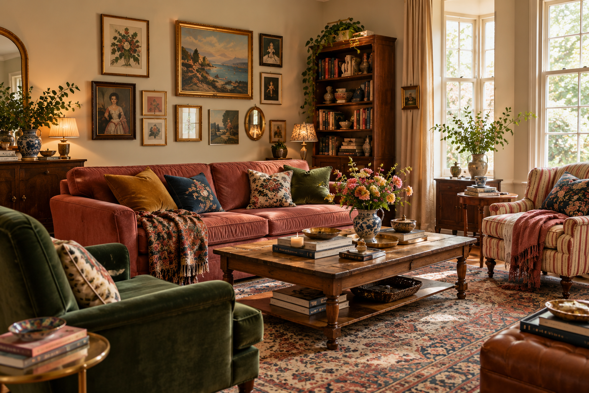
Disclaimer: All products featured on OKAD are independently selected by our editors.
However, we may earn a small commission when you purchase products through links on
our site, at no additional cost to you.
Maybe our homes don't need to look perfectly neutral. Aditi Rao Hydari
and Siddharth's Chennai home is a beautiful reminder that color, pattern,
vintage pieces, and a little personality can turn a house into somewhere
people actually want to live.
Walk through a hundred homes online today and you may start to wonder something.
Where did all the colour go?
Somewhere along the way, our homes became very good at looking calm.
Cream sofas, beige walls, pale rugs, light wood and soft neutral
everything. It can be beautiful, of course. But sometimes you look
around and wonder: where are the people?
A home is where birthdays happen, books pile up, children leave things
behind, friends stay for coffee and someone always ends up sitting in
the wrong chair. It is not a showroom. It is a place that should feel
like someone actually lives there.
That is one of the things I love about Aditi Rao Hydari and Siddharth's
Chennai home. It moves from blue to green, pink to yellow, dusty rose
to ivory, bringing together patterns, vintage furniture, artwork,
carpets, custom wallpapers and collected objects in a way that feels
personal rather than perfect.
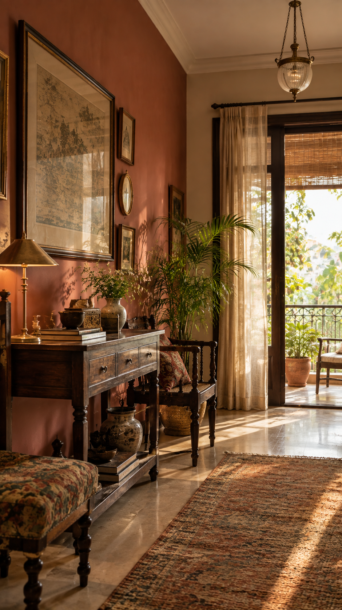
MAYBE WE DON'T NEED TO REMOVE COLOR. MAYBE WE NEED TO USE IT BETTER.
Calm does not have to mean beige.
A room can feel peaceful in deep blue, soft green, faded rose or warm
yellow. It can have flowers on the wallpaper, stripes on a chair or a
patterned rug under the coffee table without becoming visually
overwhelming.
The secret is not removing colour. It is giving colour a reason to be
there. Let it create a mood, bring attention to a beautiful piece or
simply make you happy when you walk into the room.
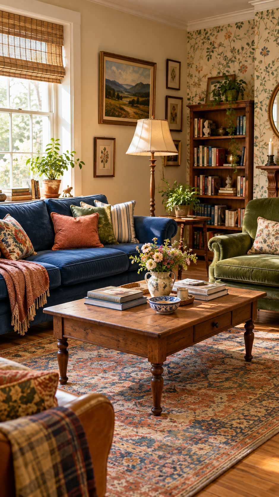
1. LET EVERY ROOM HAVE ITS OWN PERSONALITY
One of the most interesting things about Aditi and Siddharth's home is
that every room seems to have its own character.
One bedroom leans into blue. Another feels green. The dining room
brings in pink, while the television room has a warm yellow mood and
the lounge moves towards dusty rose.
You do not have to choose one colour and repeat it throughout the
entire house. Instead of asking, "What is my whole-house colour?" try
asking, "How do I want this room to feel?"
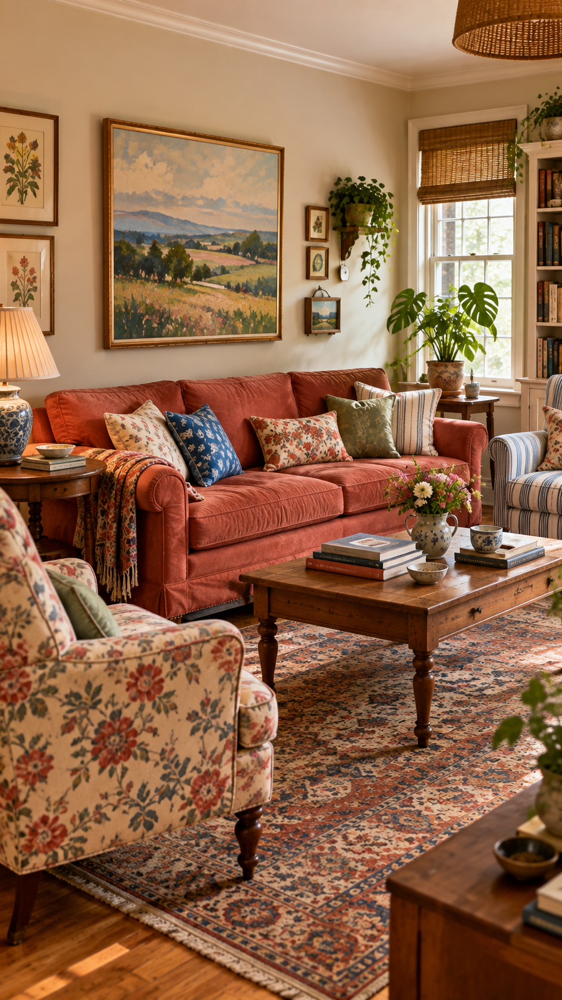
2. BRING BACK THE COLORFUL SOFA
There is something wonderfully confident about a sofa that is not
cream.
Think dusty pink, deep green, faded blue, warm red or even a beautiful
patterned fabric. You can keep the rest of the room relatively simple
and let the sofa become the piece that gives the space its personality.
And if a colourful sofa feels like too much of a commitment, start
smaller. Try a printed armchair, a colourful bench or a pair of
patterned cushions.
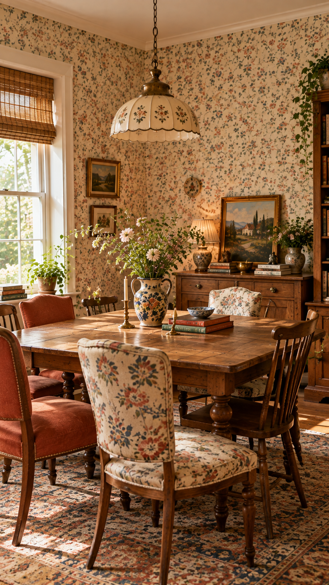
3. YES, YOU CAN PUT WALLPAPER ON THE WALLS
Wallpaper can completely change the feeling of a room, especially when
the pattern is small and considered.
Think delicate florals, tiny vines, small stripes, traditional motifs
or botanical designs. You do not need a dramatic mural covering every
wall.
A small floral wallpaper in a dining room, bedroom, hallway or reading
nook can make the space feel like it has a story of its own.
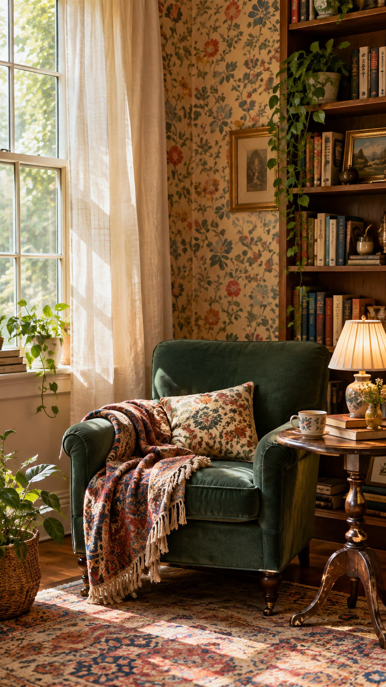
4. MAKE YOUR READING CORNER RIDICULOUSLY COZY
Every home deserves one corner that makes you want to stop what you are
doing.
Put a deep green, faded blue or warm mustard armchair near a window.
Add a small table for tea and books, a patterned blanket and a warm
lamp. Put a few books within easy reach and let the space look used.
The goal is not to create a perfect little corner for photographs. It
should make you think, "I want to sit there."
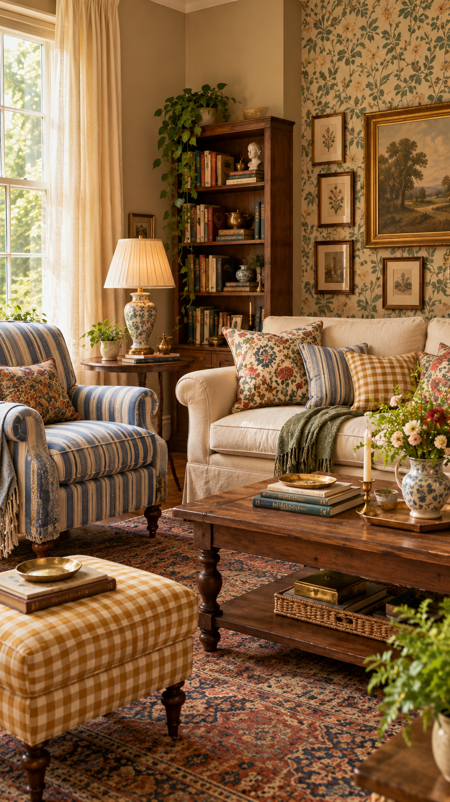
5. MIX STRIPES, FLORALS AND CHECKS
Matching everything is not the only way to make a room work.
Try stripes with florals. Checks with ikat. A botanical print with a
geometric rug. The combination can feel surprisingly elegant when the
colours have some connection.
The secret is connection, not matching. Repeat one or two colours
across different patterns and let the rest be a little unexpected.
Inspired by This Article
Thoughtful pieces inspired by this story.
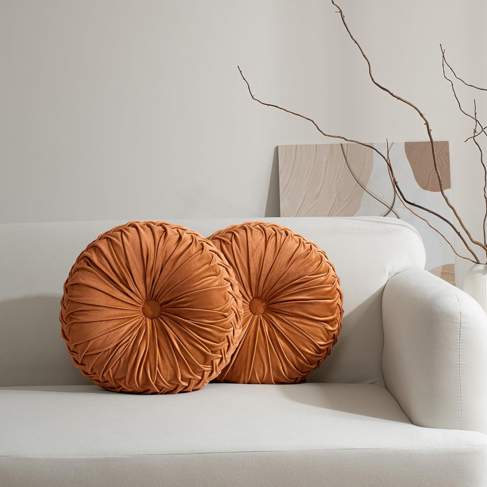
Velvet Decorative Pillows
Classy accent pumpkin with center button, set of 2 vintage floor velvet round pleated pillows.
Not everything in your home needs to look brand new.
An aged wooden cabinet, a vintage lamp, a slightly worn rug or a chair
found in an antique shop can bring a kind of warmth that new furniture
sometimes cannot.
Mix those pieces with contemporary furniture instead of trying to make
the entire room look vintage. The little imperfections are often what
make a room feel lovable.
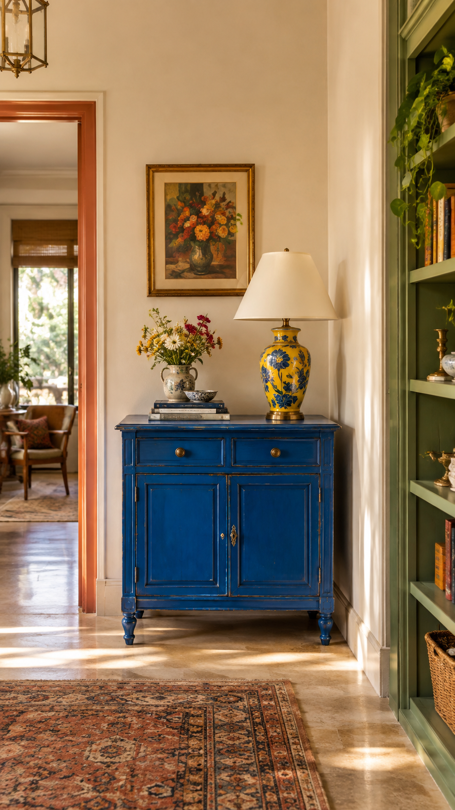
7. USE COLOR WHERE YOU LEAST EXPECT IT
You do not always need to paint an entire room to bring in colour.
Try a cobalt-blue cabinet, a colourful lampshade, the inside of a
bookshelf, a small painted table or even a bright dining chair.
Sometimes one unexpected piece is enough to change the feeling of an
otherwise quiet room.
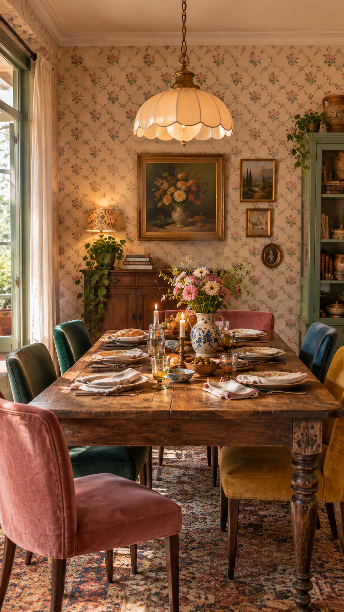
8. GIVE YOUR DINING ROOM A LITTLE DRAMA
The dining room is one place where a little extra personality feels
completely natural.
Try patterned wallpaper with an old wooden table, colourful chairs and
a beautiful pendant light. It does not have to feel formal.
The best dining rooms make you want to stay for another cup of tea,
another conversation and probably another plate of food.
The pink dining room in Aditi and Siddharth's Chennai home is a lovely
reminder of how colour and pattern can make an everyday space feel
memorable.
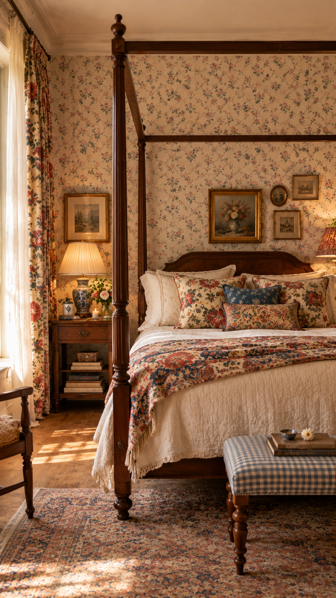
9. LET BEDROOMS BE DREAMY
Bedrooms do not have to be completely neutral to feel restful.
Try floral wallpaper with simple bedding, a patterned headboard with
quieter curtains or a colourful lamp beside an ivory bed. A four-poster
bed with fabric can also make a room feel wonderfully tucked away.
Aditi and Siddharth's bedroom shows how beautifully patterns can be
layered when softer ivory tones are used to give the eye somewhere to
rest.
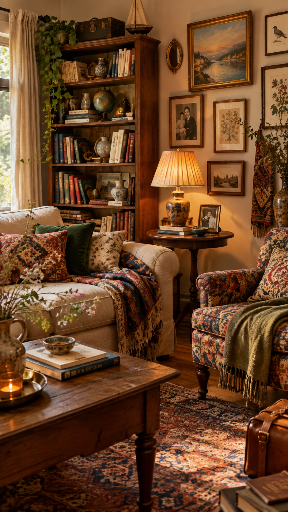
10. GIVE YOUR HOME SOMETHING TO REMEMBER
The most beautiful things in a home are not always the most expensive
ones.
It might be a piece of art made by someone you know, a chair found
while travelling, your grandmother's lamp, a shelf full of books, a
handmade bowl or a photograph that means something to you.
These are the things that make a house feel like yours. They quietly
tell the story of who lives there.
SO, WHY ARE WE TAKING THE COLOR OUT OF OUR HOMES?
Maybe because neutral is easy.
It photographs beautifully. It works with almost everything. It feels
safe. And there is nothing wrong with loving a quiet, neutral room.
But easy does not always mean personal.
A home should be allowed to surprise you. It can have a colourful
chair, a strange little lamp, an imperfect rug, an overflowing
bookshelf or a bedroom that feels a little like a garden.
And if you have children, let them have colour too. Let them draw.
Let their things exist. Let there be evidence that people live there.
The beauty of a home is not that nobody touches anything. It is that
people feel comfortable enough to touch everything.
INSPIRED BY ADITI RAO HYDARI AND SIDDHARTH'S CHENNAI HOME
This article was inspired by Architectural Digest India's recent home
tour of Aditi Rao Hydari and Siddharth's first home together in Chennai.
The home was designed by architect Sruthi C Reddy and personalized by
designer Pavitra Rajaram, with interior styling by Samir Wadekar.
Photography for the original Architectural Digest feature was by Tarun
Vishwa and Talib Chitalwala.
The original home tour offers a beautiful look at how colour, pattern,
vintage pieces, art and personal objects can come together without
making a home feel overly precious.
Our images for this article are original inspiration images and are not
photographs of Aditi Rao Hydari and Siddharth's home.
20+ Autumn Outfits That Actually Feel Fun to Wear
Denim skirts, cozy knits, boots and unexpected pops of color;
easy autumn combinations to make your everyday wardrobe feel fresh again.
FASHION
14 SEPTEMBER, 2026
Disclaimer: All products featured on OKAD are independently selected by our editors.
However, we may earn a small commission when you purchase products through links on
our site, at no additional cost to you.
Autumn is probably the easiest season to dress well. You can
finally bring out the boots, jackets, knits, skirts and coats
that have been waiting in the back of the wardrobe, and you do
not have to choose between looking good and being comfortable.
The trick is not having more clothes. It is knowing how to put the ones you
already own together in a way that feels fresh.
A denim skirt can suddenly look polished with a fitted knit and tall boots.
Your favourite jeans can feel completely different under a long coat. A simple
dress can become an autumn outfit with nothing more complicated than a cardigan,
tights and the right shoes.
So instead of giving you another list of outfits that all look suspiciously alike,
here are 24 autumn outfit ideas with a little more personality. Think cute, chic,
practical and easy enough to actually wear.
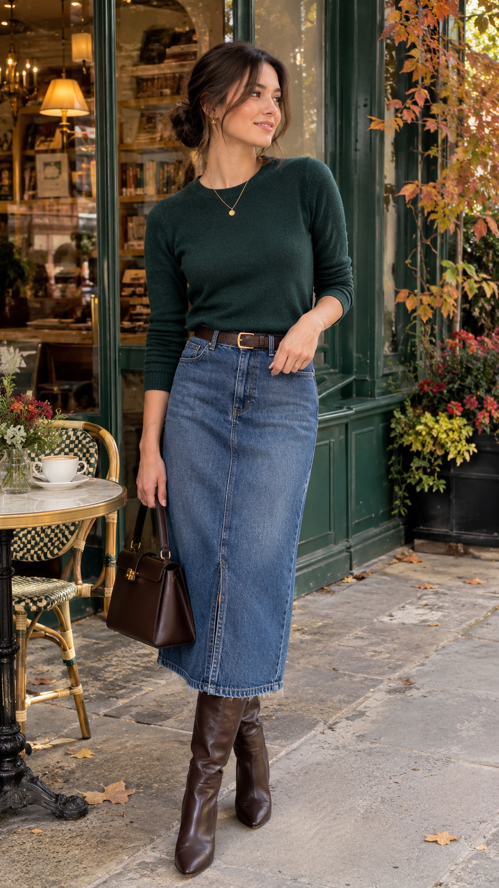
1. Denim Skirt + Fine Knit + Tall Boots
A denim skirt is one of those pieces that can completely change depending
on what you put with it. For autumn, try a midi denim skirt with a fine
fitted knit tucked loosely at the waist and a pair of tall boots.
Add a structured handbag and a simple belt if the outfit needs a little more
definition. A deep red, chocolate brown, forest green or navy knit makes the
whole combination feel instantly seasonal without looking predictable.
This is an easy one for coffee dates, shopping, casual lunches and everyday
plans when jeans feel a little too ordinary.
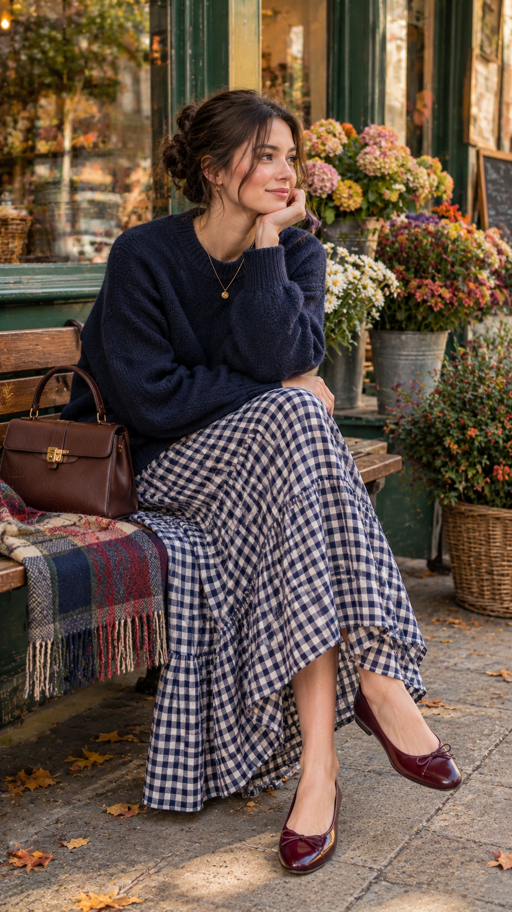
2. Maxi Checkered Dress + Baggy Knit + Ballerinas
A maxi cotton checkered dress is such an easy autumn piece, especially when
you want something feminine without feeling overly dressed.
Layer a baggy knitted sweatshirt or oversized cardigan over the dress,
letting a little of the checkered skirt show underneath. Add simple ballerina
flats and a structured handbag to keep the look polished.
The combination of the relaxed knit, flowing cotton dress and delicate
shoes gives you that lovely balance between cozy and chic. Add a long coat
when it gets colder, or a scarf for a little extra texture.
It works beautifully for coffee dates, shopping, casual lunches, everyday outings
and those slow autumn afternoons when you still want to look put together.
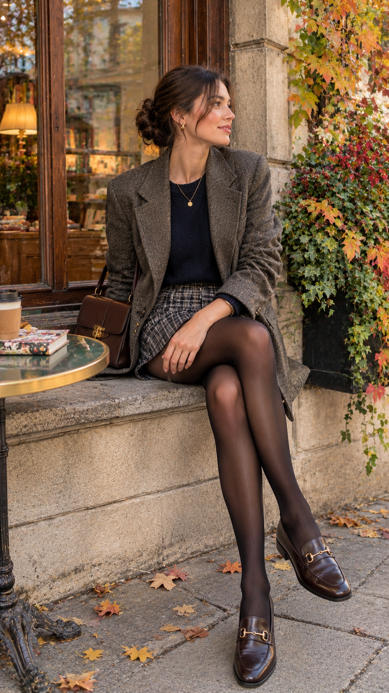
3. Mini Skirt + Oversized Blazer + Loafers
If you have a mini skirt sitting in your wardrobe that usually gets
forgotten once summer ends, do not pack it away just yet.
Wear it with an oversized blazer, a simple knit or tucked-in shirt and loafers.
Add tights when the weather turns colder and let the blazer do most of the styling
work.
It feels polished without becoming too formal, which makes it useful for lunches,
casual workdays, museums, shopping and days when you want your outfit to have a
little more structure.
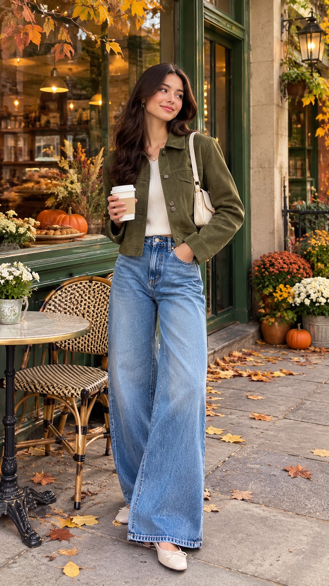
4. Wide Leg Jeans + Short Jacket + Ballet Flats
Wide-leg jeans are especially good when you want a relaxed outfit that still looks
considered. Pair them with a shorter jacket to create a simple contrast between
the loose denim and the neater top layer.
Finish with ballet flats, a
small shoulder bag and a simple knit underneath. A cropped denim jacket,
corduroy jacket or soft suede-style jacket can all work here.
This is the sort of outfit that works from a morning coffee to an afternoon
of errands without needing a change halfway through the day.
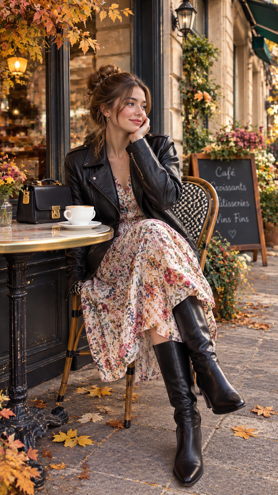
5. Leather Jacket + Floral Midi Dress + Boots
This is one of those combinations that looks much more complicated than it actually is.
Take a floral midi dress you normally associate with warmer weather and add a leather
jacket on top.
Then bring in ankle or knee-high boots to make the outfit feel
grounded for autumn. The softness of the floral dress against the structured jacket
keeps the look interesting.
You can wear this for lunch, a casual dinner, a gallery visit or any day when you
want something a little more special without dressing up too much.
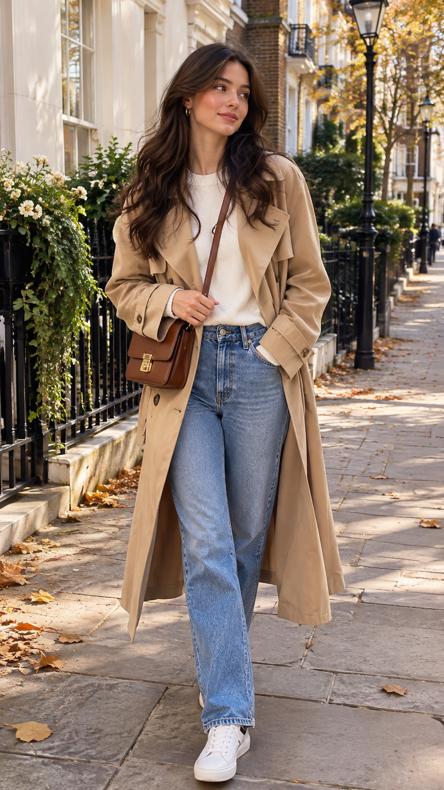
6. Straight Leg Jeans + Trench Coat + Sneakers
A trench coat can make even the simplest jeans outfit feel intentional.
Start with straight-leg jeans, a fine sweater or plain T-shirt, and your
favourite clean sneakers.
Then add the trench and a crossbody or structured handbag. Keep the rest simple
and let the coat become the main layer.
It is an especially useful fall outfit for travel days, errands, casual meetings and
weekends when you want comfort without looking like you simply threw everything on.
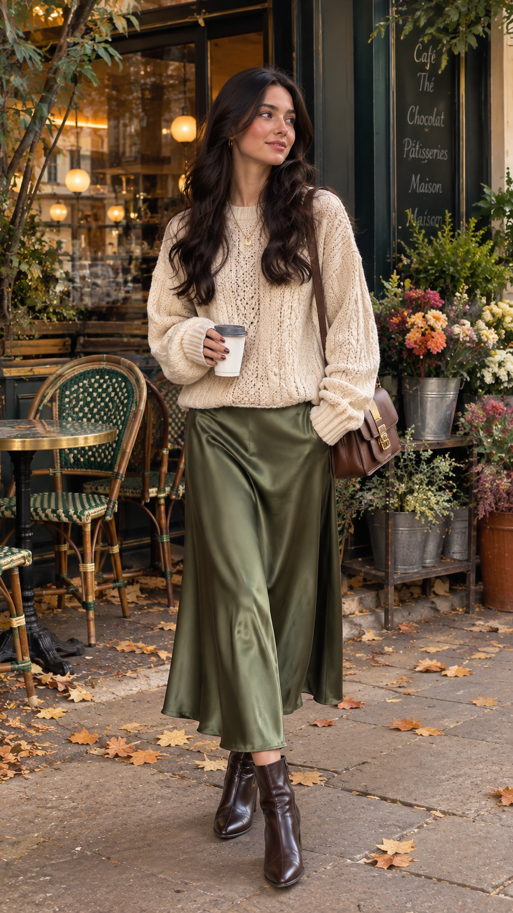
7. Satin Skirt + Chunky Sweater + Boots
A satin skirt does not have to stay reserved for dressier occasions.
One of the nicest ways to wear it in autumn is with a chunky knitted sweater.
Let the sweater sit naturally over the skirt rather than trying to make everything look
perfectly tucked and polished. Add ankle boots and a simple handbag.
The contrast between the soft, fluid skirt and heavier knit gives the outfit plenty of
texture. It is lovely for lunches, casual dinners, creative workdays and weekend plans.
8. Corduroy Trousers + Tucked in Shirt + Loafers
Corduroy instantly makes a simple outfit feel more autumnal.
Try a pair of wide or straight corduroy trousers with a crisp button-down shirt.
Tuck the shirt in loosely and add loafers. A cardigan over the shoulders or a wool
coat on colder days gives you another layer without making the outfit complicated.
Try rust, olive, burgundy, navy or warm brown instead of automatically reaching for
black.
These colors look especially good with simple shirts and classic shoes.
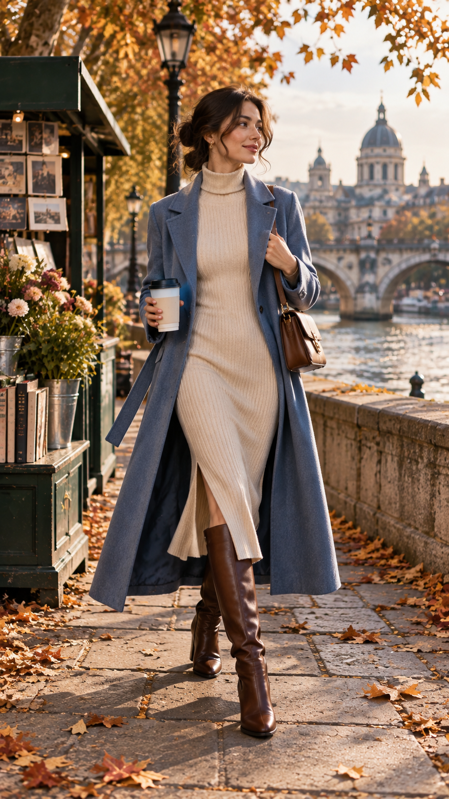
9. Knit Dress + Tall Boots + Long Coat
When you want an outfit that requires almost no thinking, a
knit dress is your friend. Choose a simple midi length and
let the outer layers do the work.
Add tall boots and a long coat, then finish with a structured bag.
If the dress is plain, bring in interest through the coat,
bag or scarf rather than adding lots of accessories.
It is comfortable enough for everyday wear but polished enough
for lunches, casual meetings and city days.
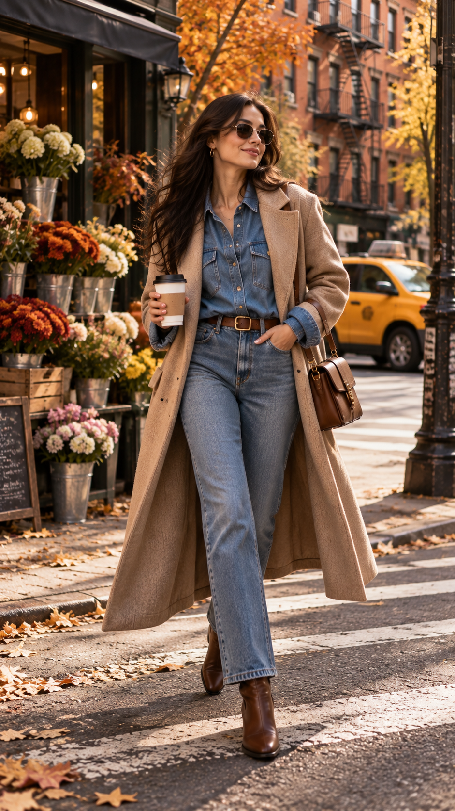
10. Denim on denim + Long Wool Coat
Denim-on-denim can be surprisingly elegant when the layers are simple. Try straight or
relaxed jeans with a denim shirt, then break up the look with a long wool coat.
Brown ankle boots or loafers make the combination feel warmer, while a structured
handbag gives it a more finished look.
The coat is what makes this outfit feel less like a matching denim set
and more like a considered autumn look.
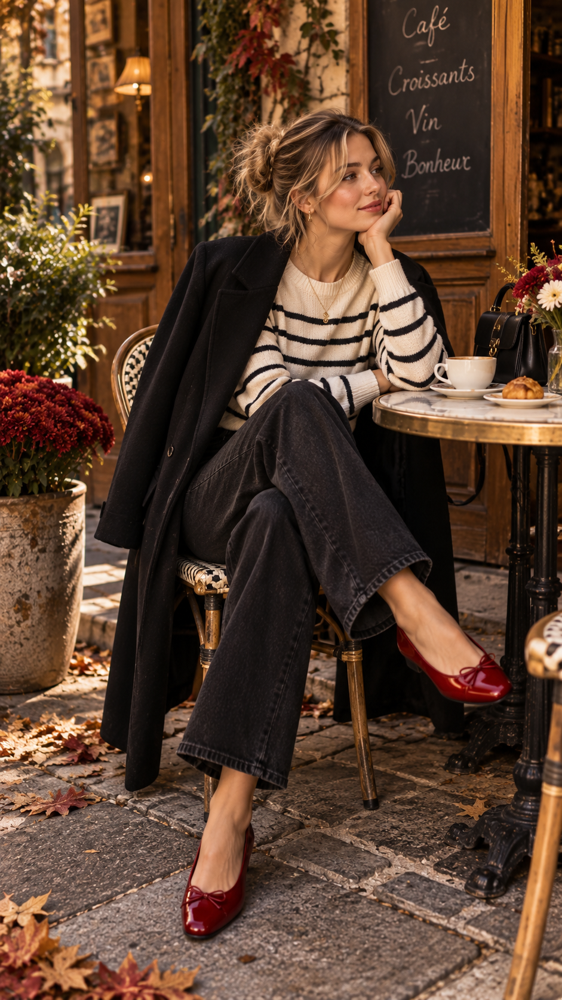
11. Black Jeans + Striped Sweater + Red Shoes
You do not need a complicated outfit to make a statement. Take black jeans
and a classic striped sweater,
then add one unexpected color through your shoes.
Red ballet flats or loafers work beautifully here, but burgundy, green or even
mustard can give the same effect.
Add a simple coat and everyday handbag and you have an outfit that feels
familiar but not boring.
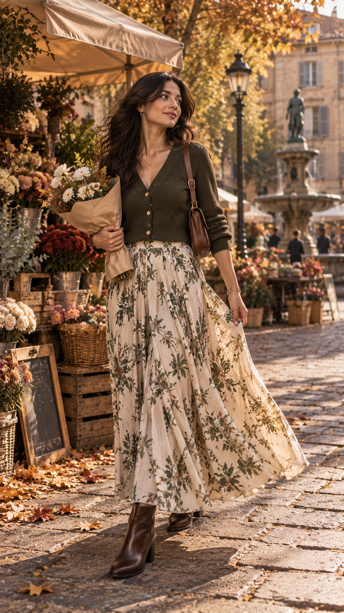
12. Maxi Skirt + Fitted Cardigan + Ankle Boots
A maxi skirt does not need a dramatic top to make an outfit work. Try a simple
fitted cardigan tucked slightly
into the waistband and add ankle boots.
A small shoulder bag and delicate jewelry are enough to finish it. If the skirt
has a print, keep the cardigan plain. If the skirt is solid, this is a great place to
experiment with stripes, checks or a little color.
It is easy to wear for lunches, casual days out and autumn weekends.
Inspired by This Article
Thoughtful pieces inspired by this story.
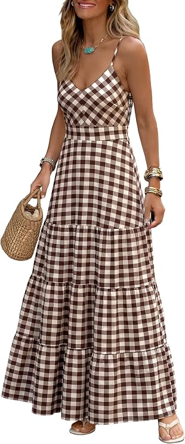
Spaghetti Strap Maxi Dress
A-Line checkered, Boho style casual wear maxi dress for a chic look & easy styling.
This is for the days when you want to be comfortable but your sweatshirt is not
exactly giving you polished outfit energy on its own.
Pair it with tailored trousers instead. Add pointed ankle boots and a
structured bag to sharpen the combination.
The trick is the contrast: relaxed sweatshirt, neat trousers and slightly
smarter shoes. It works particularly well for casual offices,
coffee meetings and days when you are moving between different plans.
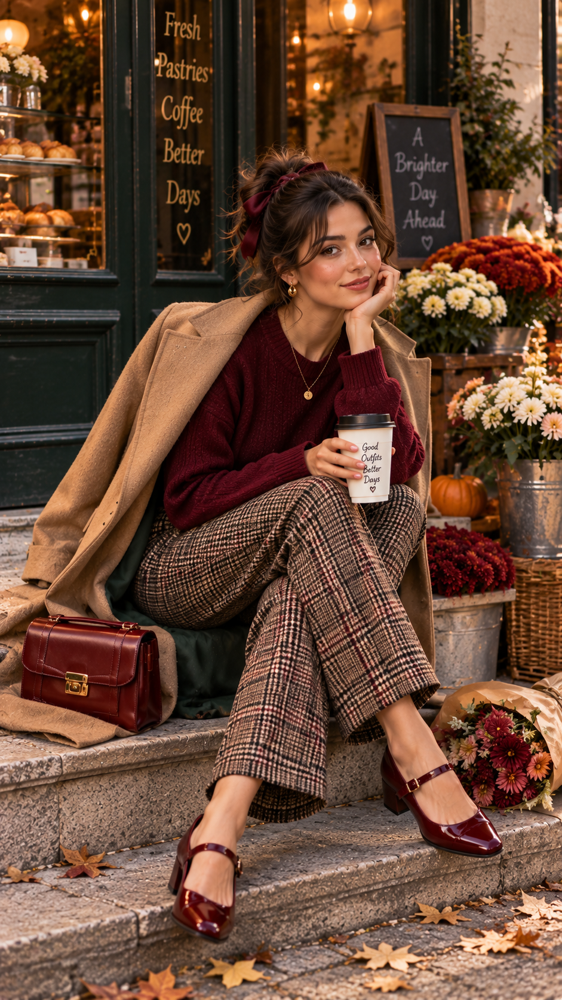
14. Checked Trousers + Plain Sweater + Mary Janes
Checked trousers already have enough personality, so let
them be the interesting part of the outfit.
Pair them with a plain crew-neck sweater and Mary Jane shoes.
A small handbag and simple coat keep everything balanced.
If the trousers are in neutral tones, try a sweater in burgundy,
dark green or dusty blue instead of matching everything to the same palette.
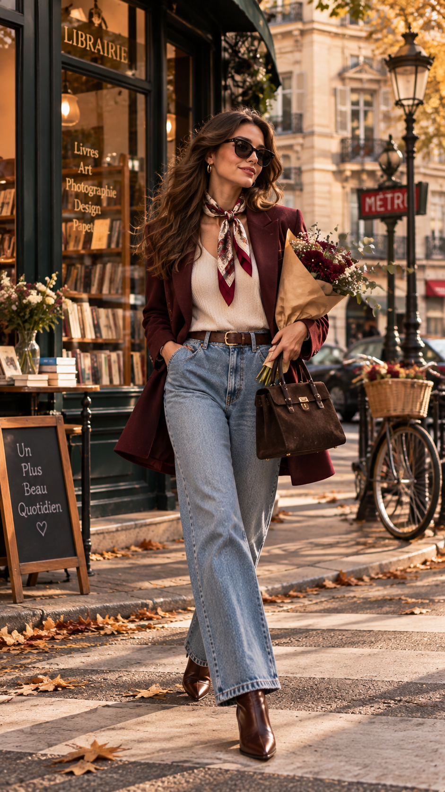
15. Blazer + jeans + Ankle Boots + Silk Scarf
When your jeans-and-blazer combination starts feeling a little too familiar,
add a silk scarf.
Tie it loosely around your neck, onto the handle of your handbag or wear it as a
small head scarf. Keep
the rest of the outfit simple with a plain knit, straight-leg jeans and ankle boots.
It is a tiny styling change, but it can make an everyday outfit feel much
more personal.
If you love floral prints, there is no reason to retire them when summer ends.
An autumn floral midi skirt looks lovely with a large cardigan and sturdy boots.
Let the cardigan be slightly oversized and keep the shoes simple.
The contrast between the delicate print and heavier knit is what makes
the outfit feel right for the season.
This one is especially nice for relaxed weekends,
bookshops, cafés and casual afternoons.
Cargo trousers do not have to look overly casual. Balance their
relaxed shape with a fitted knit and a short suede-style jacket.
Add simple ankle boots or loafers and a small shoulder bag.
Keeping the top and jacket cleaner makes the pockets
and relaxed trousers feel intentional rather than messy.
It is a great option for travel, errands, casual lunches
and days when you want something practical with a little edge.
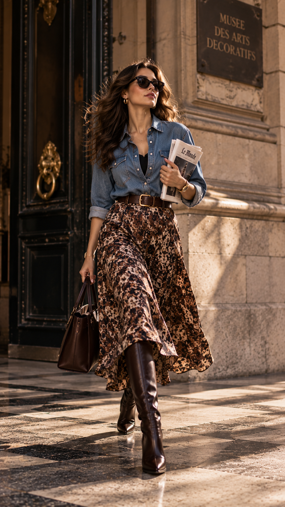
18. Denim Shirt + Midi Skirt + Knee High Boots
A denim shirt is much more versatile than it gets credit for. Instead of
wearing it with jeans, pair it with a midi skirt and knee-high boots.
Tuck the shirt in loosely or leave the last few buttons open over a simple
fitted top. A belt can help connect
the denim shirt and skirt without making them look too coordinated.
Try this with a printed skirt for more contrast or a plain skirt
when you want something quieter.
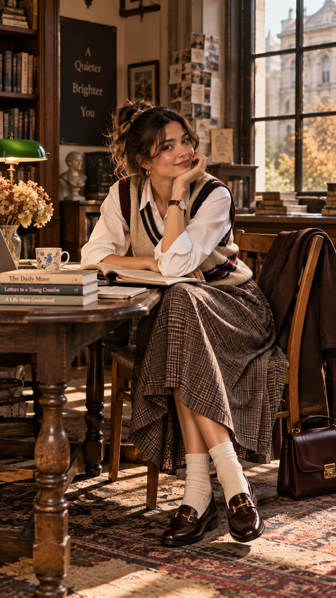
19. Sweater Vest + Button Down + Midi Skirt
A sweater vest can make a basic shirt feel completely different.
Layer one over a crisp button-down and pair it with a midi skirt.
Add loafers, Mary Janes or ankle boots depending on the mood. A slightly oversized
vest works particularly well with a simple skirt because the whole outfit stays
relaxed.
This is an easy look for studying, working, cafés,
museums or a casual day around town.
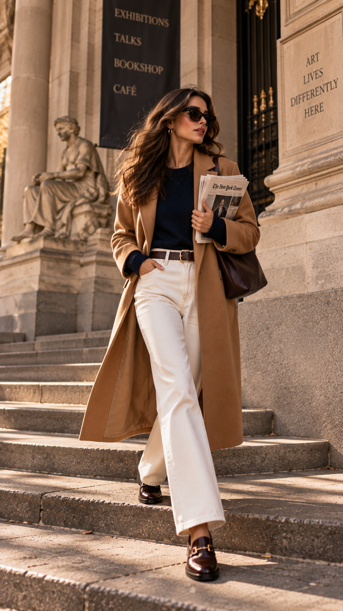
20. White Jeans + Camel Coat + Dark Shoes
White jeans do not have to disappear from your wardrobe once autumn arrives.
In fact, they can look beautifully fresh against darker seasonal layers.
Add a camel coat, navy or chocolate knit and dark loafers or ankle boots. The lighter
denim keeps the outfit from becoming too heavy while the coat gives it that autumn
feeling.
This is a simple combination to keep in mind when you are tired of wearing the
same dark jeans every week.
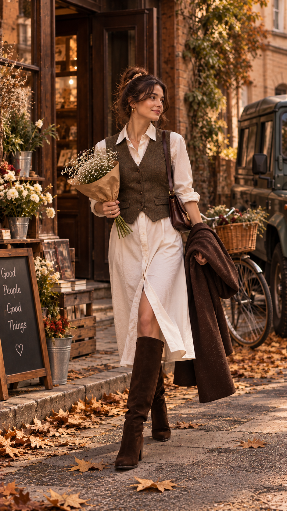
21. Shirt Dress + Waistcoat + Boots
A shirt dress can become a completely different autumn outfit with one extra layer.
Add a knitted or tailored waistcoat over it and finish with ankle or knee-high boots.
If the dress is long and loose, choose a more structured waistcoat.
If the dress is simpler and straighter, you can go for a softer oversized
knit.
Add a handbag and a coat when necessary, and you have
a comfortable outfit that still feels thoughtfully styled.
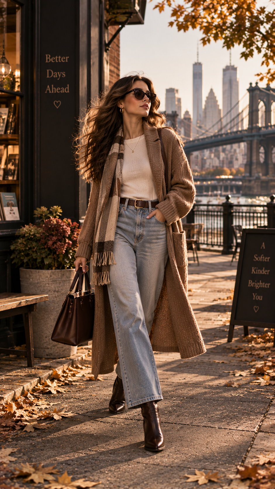
22. Relaxed Jeans + Long Cardigan + Ankle Boots
Sometimes the best outfit is the one that asks absolutely nothing from you.
Take your favourite relaxed jeans,
add a simple fitted or tucked-in top and throw a long cardigan over everything.
Ankle boots and a structured handbag keep the look from
becoming too lounge-like. You can also add a scarf when the temperature
drops.
It is ideal for slow weekends, grocery runs,
casual coffee dates and days spent walking around town.
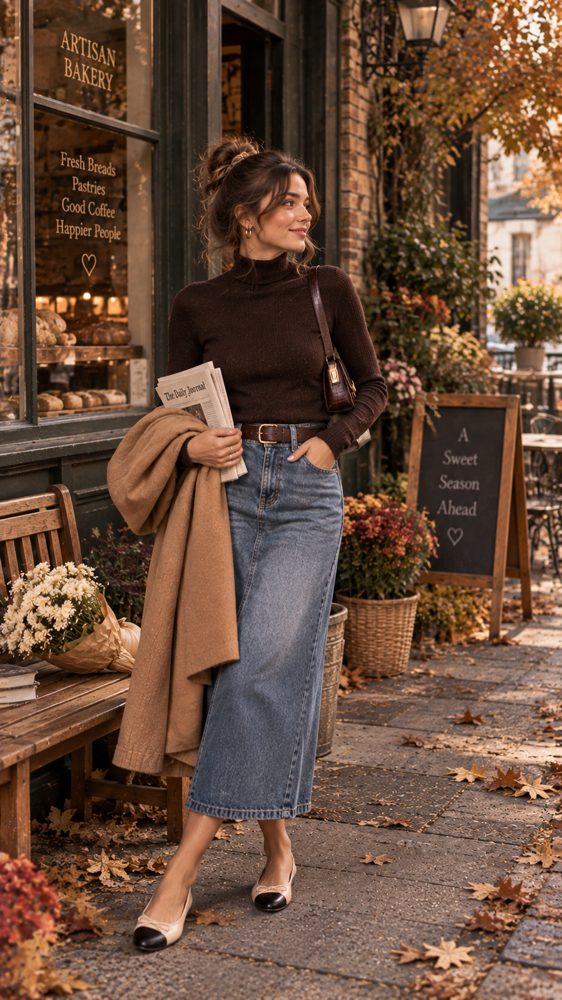
23. Turtleneck + Denim Midi Skirt + Ballet Flats
A denim midi skirt and a simple turtleneck are a surprisingly good autumn pairing.
The denim keeps the
outfit casual while the turtleneck makes it feel a little more polished.
Add ballet flats, a small handbag and a long coat if needed.
You can also swap the flats for ankle boots when the weather gets colder.
It is simple enough for everyday wear but has just enough structure to feel
special.
24. Colourful Coat + Simple Jeans Outfit
And finally, let the coat be the outfit.
Start with the simplest combination you own: jeans,
a knit and everyday shoes. Then add a coat in a color
you normally would not choose.
Deep red, cobalt blue, forest green, mustard,
dusty pink or even a rich purple can completely change an otherwise ordinary outfit.
You do not need a complicated outfit underneath. In fact, keeping the
rest simple makes the color feel intentional rather than overwhelming.
A few autumn styling tricks worth stealing
You really do not need a completely new wardrobe every time the season changes.
A few small
styling swaps can make clothes you have worn a hundred times feel surprisingly
different.
Try changing the shoes first. Ballet flats can make jeans feel softer,
loafers can make a skirt feel more polished, and boots can instantly give
a summer dress a completely different mood.
Then play with texture. Denim with wool, satin with chunky knitwear, corduroy
with cotton, leather with florals and suede-style jackets with simple shirting
all create contrast without requiring lots of accessories.
And do not feel like autumn has to mean brown, black and cream.
Deep red, forest green, mustard, navy, dusty blue, muted pink and terracotta can all make
everyday fall outfits feel much more interesting.
The easiest way to make an outfit feel personal is usually to add one
thing you would not normally pair with it. A silk scarf with jeans.
Ballet flats with a long dress. A colorful coat over the simplest outfit
in your wardrobe. A chunky cardigan over something delicate.
The best autumn outfit is the one you will actually wear
The nicest thing about autumn dressing is that you do not
have to make everything complicated.
Use the clothes you already have. Wear your favourite jeans with a
different coat. Bring your skirts back into rotation. Put boots with dresses.
Try a color you normally overlook.
Mix something polished with something completely relaxed.
That is usually where the good outfits happen —
somewhere between having a plan and not taking it too seriously.
Because getting dressed well is not really about having the perfect autumn wardrobe.
It is about knowing what to do with the clothes you already have.
The Art of Curling Up:
14 Dreamy Reading Nook Ideas
That Feel Like Your Own Little World
Discover reading nooks that turn quiet corners into little worlds of their own.
HOME DECOR
17 AUGUST, 2026
Disclaimer: All products featured on OKAD are independently selected by our editors.
However, we may earn a small commission when you purchase products through links on
our site, at no additional cost to you.
There is something special about a reading nook.
It isn't just a comfortable chair placed beside
a window. It isn't simply a bookshelf, a blanket,
and a small table.
A truly beautiful reading nook feels like a little
escape from the rest of the house. A place where
the afternoon slows down, the light becomes softer,
and even a few quiet pages feel like an entire evening.
And perhaps that's what we should be designing.
Not another reading corner that looks exactly like
every other one on Pinterest. Not a space filled
with furniture simply because it belongs in a
reading room.
But a little world with its own atmosphere,
architecture, and personality.
Imagine curling up inside a round glass garden room
while rain falls outside. Imagine stepping into a
tiny hobbit-inspired reading room where the ceiling
seems to embrace you.
Or discovering a beautifully crafted reading retreat
hidden behind an ordinary wall.
The best reading nook isn't necessarily the largest
one. It's the one that makes you want to stay.
So, let's explore some reading nook ideas that go
beyond the usual designs.
Some are architectural. Some are wonderfully small.
Others feel like quiet luxury, vintage European
interiors, or a dream you could almost step inside.
1. The Glass Garden Cocoon
A round outdoor reading nook surrounded by nature
For those who dream of reading inside their own little garden world.
Let's begin with something that feels almost unreal.
Picture a small, round glass house tucked into
a quiet garden. Its curved walls allow natural
light to enter from every direction, while the
surrounding greenery creates a sense of privacy
without completely separating you from the outdoors.
Inside, there is no conventional sofa or oversized
reading chair.
Instead, a gently curved built-in seating platform
follows the shape of the room.
Soft cushions, a textured throw, and a low circular
table create a place where you can stretch out,
curl up, and forget about the time.
The floor could be finished in warm natural wood
or handmade terracotta tiles.
A few climbing plants might frame the entrance,
while the glass reflects the garden throughout
the day.
In the morning, the space feels fresh and luminous.
In the afternoon, sunlight moves slowly across
the floor.
And when evening arrives, a small warm lamp turns
the glass house into a glowing little retreat.
The OKAD detail
Don't fill every corner with plants and decorations.
Let the garden become part of the interior design.
Sometimes the most beautiful decoration
is the view itself.
Best for:
Garden homes, nature lovers, dreamy outdoor retreats,
and homeowners who want a reading nook that feels
like a separate world.
2. The Hobbit Hideaway
A cozy curl-up reading room inspired
by an underground home
For those who want their reading nook to feel
like a warm little shelter.
If the glass garden cocoon feels open and airy,
this idea moves in the opposite direction.
Imagine entering a small hobbit-inspired reading
room with rounded walls, a low curved ceiling,
and a doorway that feels like the entrance
to a secret home.
The room is not large. In fact, its charm comes
from its intimate proportions.
A deep, built-in reading bed occupies one side
of the room, shaped to fit the curved wall.
It is wide enough to curl up with a book,
stretch your legs, or spend a rainy afternoon
listening to the weather outside.
The walls could feature natural plaster,
limewash, or softly textured finishes
in warm earthy tones.
A small recessed bookshelf sits beside the bed,
keeping favorite books within reach.
Instead of bright overhead lighting, the room
uses small wall lights and concealed illumination
around the reading alcove.
Nothing feels overly polished.
Nothing feels hurried.
It is a room designed for comfort first.
The OKAD detail
Give the room one beautifully designed
rounded window.
It could frame a garden, a tree, or simply the sky.
A small view can make a small room
feel much bigger.
Best for:
Small homes, garden studios, imaginative interiors,
and anyone who loves the feeling of a private hideaway.
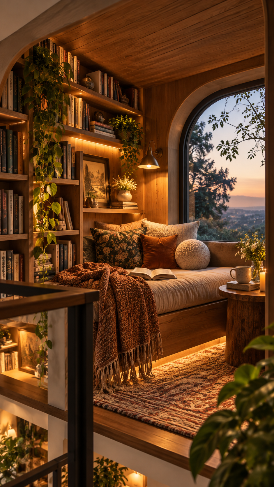
3. The Suspended Library
An architectural reading nook above the living space
For those who want their reading corner
to become part of the architecture.
Now, let's move toward something more unexpected.
Imagine a reading nook built into a mezzanine
or elevated platform above a living room.
Rather than creating a separate room, the architect
designs a quiet reading retreat into the structure
of the home.
From the living room below, you might see
a softly illuminated alcove framed by timber,
with a curved opening overlooking the space.
Inside, the nook is surprisingly simple.
A built-in seat runs along the wall,
accompanied by a narrow bookshelf
and a small reading light.
The elevated position provides a sense
of separation without completely disconnecting
the reader from the rest of the home.
The architecture does most of the work.
A beautifully proportioned opening.
A carefully placed window.
A warm timber ceiling.
A staircase that leads naturally
toward the reading space.
It feels less like furniture and more like
a secret architectural feature.
The OKAD detail
Use the same wood finish or architectural language
in the reading nook and the room below.
This creates visual continuity and makes
the reading space feel intentionally designed.
Best for:
Modern homes, renovation projects,
split-level interiors, and architecture enthusiasts.
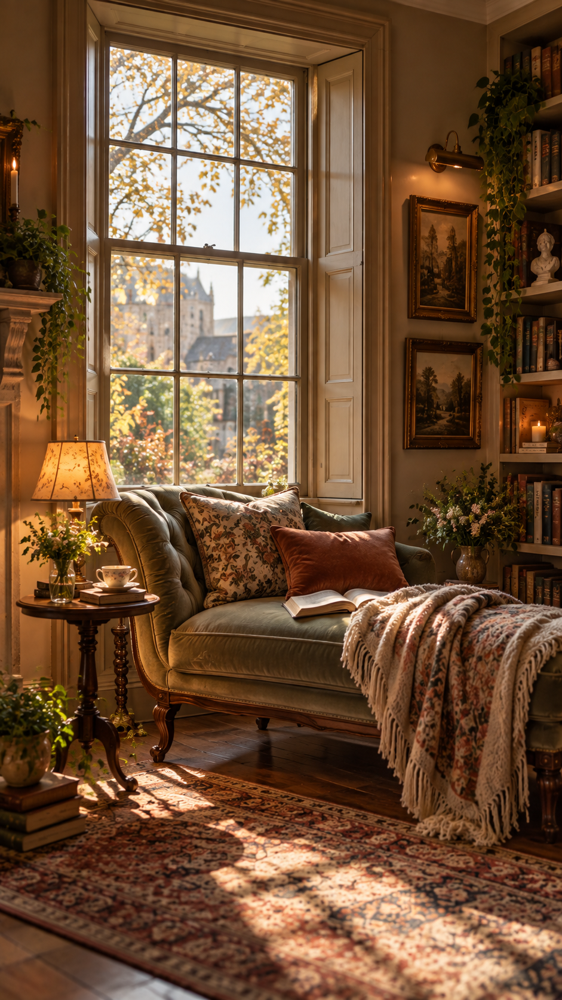
4. The Vintage Window Alcove
A classic reading nook built around
one extraordinary piece of furniture
For those who love old-world character
with a calm, modern touch.
Some reading nooks don't need unusual architecture.
They need one remarkable piece of furniture.
Imagine a tall, elegant window with deep
wooden framing.
Beneath it sits a vintage chaise longue,
upholstered in a soft, slightly weathered fabric.
Its curved silhouette brings character
to the room without making the space
feel overly decorated.
Beside it, a small antique side table
holds a reading lamp and a cup of tea.
The walls are painted in a warm, muted shade,
perhaps aged ivory, dusty sage, or a soft
mineral beige.
A vintage painting hangs nearby, while
a traditional rug adds texture underfoot.
The room feels collected over time,
but not cluttered.
The furniture has history.
The surroundings remain calm.
This is a reading nook where classic design
meets everyday comfort.
The OKAD detail
Let the statement furniture remain the focus.
You don't need five antique pieces competing
for attention.
One beautiful chair can establish
the entire mood.
Best for:
Classic homes, vintage-inspired interiors,
European-style rooms, and lovers
of timeless furniture.
5. The Secret Wall Retreat
A reading nook hidden behind
a beautifully designed bookshelf
For those who want a little mystery
in their home.
What if your reading nook wasn't visible
at first glance?
Imagine a wall of bookshelves stretching
across a quiet hallway or bedroom.
The shelves appear to be part of the architecture,
but one section opens into a small reading retreat.
Beyond it is a compact room with
a built-in daybed, soft lighting,
and a narrow window.
The entrance is discreet.
The interior is peaceful.
It feels like discovering a secret space
within your own home.
The design doesn't need to imitate
a fantasy library.
A contemporary version with natural oak,
plaster walls, and clean architectural lines
can be equally beautiful.
The magic comes from the transition
between the ordinary room and
the hidden retreat.
The OKAD detail
Keep the inside simpler than the outside.
The surprise should be the feeling of entering
a quiet, personal space, not an overload
of decorations.
Best for:
Larger homes, creative renovations,
book lovers, and people who enjoy
unexpected architectural details.
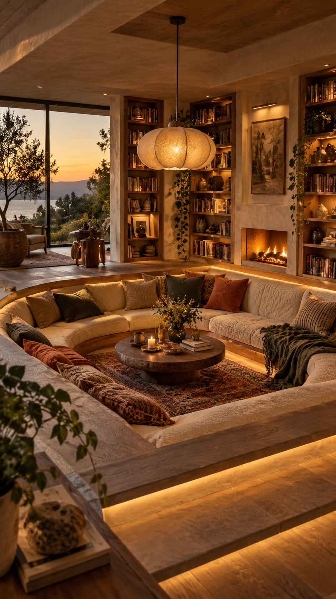
6. The Sunken Conversation Nook
A reading retreat inspired by
the geometry of a sunken room
For those who want an architectural nook
with a generous, lounge-like feeling.
A sunken reading area can transform
an ordinary room into something
much more interesting.
Instead of placing a chair on the floor,
imagine a shallow, carefully designed
recessed seating area with a generous
upholstered platform.
The surrounding floor creates a subtle boundary,
giving the reading nook its own sense of place.
A curved backrest or built-in seating
follows the shape of the recess.
Bookshelves are integrated into the surrounding
walls, while a sculptural pendant or soft
wall lighting provides a visual focal point.
The result feels like a combination
of a reading lounge and a small
architectural retreat.
It is spacious enough to share,
but still comfortable for one person
to curl up with a book.
The OKAD detail
Use a single material transition
to define the nook.
For example, a timber floor around
the seating area and a softly textured
platform within it.
The change can be subtle, but it gives
the space a clear identity.
Best for:
Spacious living rooms, contemporary architecture,
and homeowners looking for an unusual
built-in reading nook.
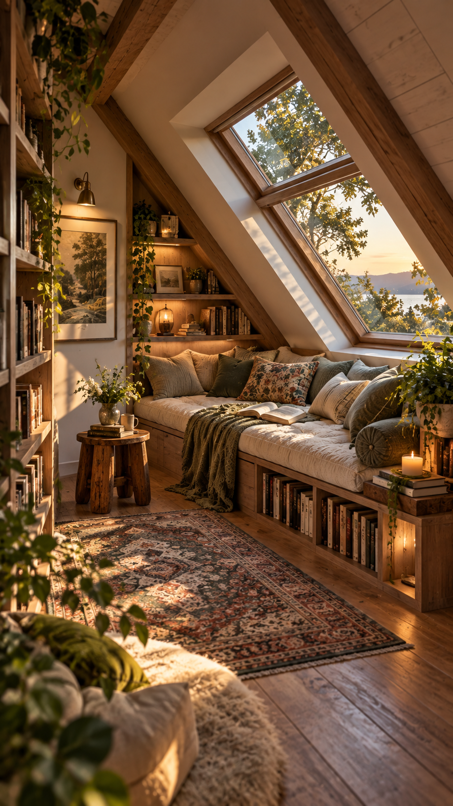
7. The Attic Observatory
A small reading room beneath
a beautifully shaped roof
For those who love quiet spaces
with a view of the sky.
There is something naturally comforting
about an attic.
Perhaps it's the sloping roof,
the sound of rain above,
or the feeling of being tucked away
from the rest of the house.
Now imagine turning that atmosphere
into a dedicated reading retreat.
The nook sits beneath a pitched roof,
with a carefully positioned skylight
or dormer window above the reading seat.
During the day, natural light enters
from overhead.
At night, the reader can look toward the sky.
The furniture remains understated.
A built-in reading bench follows
the slope of the wall, while a small shelf
holds books and personal objects.
Warm wood and soft textiles prevent
the room from feeling cold or unfinished.
The design doesn't need to be rustic.
A refined contemporary attic with carefully
detailed joinery can feel equally inviting.
The OKAD detail
Design the reading position around the light,
not just the view.
A beautiful skylight is wonderful,
but glare and excessive heat should
be considered during planning.
Best for:
Attic conversions, small upper-floor spaces,
and anyone who enjoys reading with natural light.
Inspired by This Article
Thoughtful pieces inspired by this story.
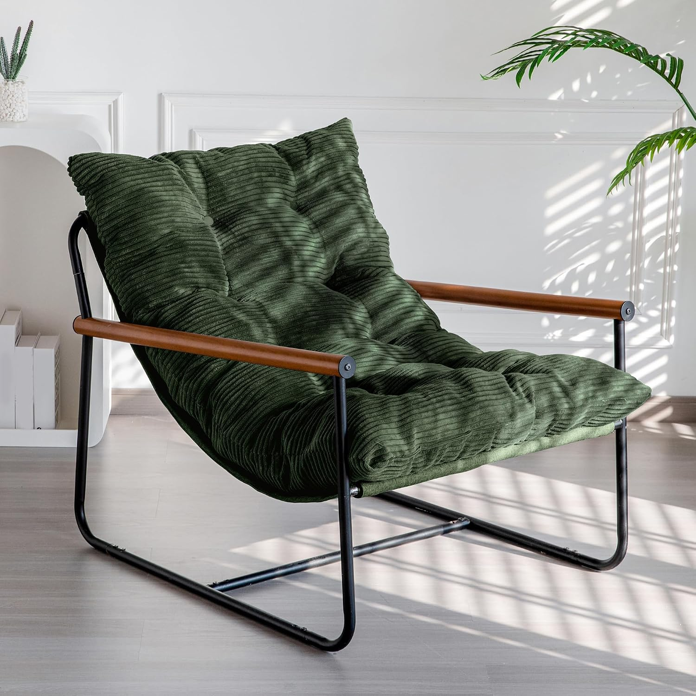
Modern Accent Chair
Comfy living room modern accent chair with metal frame for your reading corner.
A refined indoor reading nook
between home and garden
For those who love the glasshouse feeling
but want year-round indoor comfort.
This idea takes inspiration from traditional
conservatories and winter gardens,
but gives them a more intimate
reading-focused design.
Imagine a narrow glass extension
connected to the home.
Instead of filling it with dining furniture,
the space is organized around
a long, comfortable reading bench.
The bench sits beside the windows,
allowing the reader to enjoy views
of the garden.
Tall plants create a sense of enclosure,
while stone flooring and natural wood
add a grounded quality.
A small library wall occupies
one end of the space.
The room feels elegant without being formal.
It can be used for reading, writing,
or simply sitting quietly while
the seasons change outside.
The OKAD detail
Choose plants that suit the room's actual
light and temperature conditions.
A beautiful indoor garden should be designed
around long-term care, not just appearance.
Best for:
Homes with garden access, conservatories,
glass extensions, and nature-inspired interiors.
9. The Sculptural Reading Cave
A small architectural space shaped
around the human body
For those who appreciate contemporary design
and intimate proportions.
Let's forget the idea of a traditional
rectangular reading room.
Imagine a small alcove shaped
with gentle curves.
The back wall forms a rounded enclosure,
while the seating platform is integrated
into the structure.
The architecture is minimal,
but the shape makes the space
feel surprisingly embracing.
There is room for a book, a cushion,
and a reading lamp.
Nothing more is required.
The design could be created with curved plaster,
sculpted joinery, or carefully constructed
timber elements.
A single small opening provides natural light,
while the surrounding walls create
a sense of separation.
It feels like a modern interpretation
of a reading cave.
Not dark or heavy.
Just quiet, soft, and enveloping.
The OKAD detail
Prioritize ergonomic seating.
A sculptural shape may look beautiful,
but a reading nook should support
your back, neck, and posture comfortably.
Best for:
Contemporary homes, minimalist interiors,
and people who love architectural details.
10. The Library Stair Landing
An overlooked corner transformed
into a beautiful reading retreat
For those who want to create something special
without adding an entire room.
Sometimes, the most interesting reading nook
is hiding in a space we rarely notice.
The landing beside a staircase.
Instead of leaving it empty, imagine
turning it into a compact reading retreat
with a built-in bench, a small bookshelf,
and a window overlooking the garden or street.
The staircase creates a natural architectural
boundary, while the landing offers enough space
for a comfortable seat.
The design can be classic or contemporary.
A traditional home might use paneled walls,
a vintage reading lamp, and a deep
upholstered bench.
A modern home might use oak cabinetry,
soft plaster, and clean geometric lines.
The space becomes useful without feeling crowded.
The OKAD detail
Don't sacrifice the movement of the home
for the reading nook.
A reading corner should feel like a natural
part of the house, not an obstacle
placed in its way.
Best for:
Small homes, renovations, apartments,
and homeowners making use of
underutilized space.
11. The Quiet Luxury Reading Salon
An elegant reading nook with
understated, comfortable design
For those who prefer luxury without
unnecessary decoration.
Luxury doesn't always need to announce itself.
Sometimes, it is the quality of the materials,
the proportion of the furniture,
and the feeling of space around you.
Imagine a quiet reading salon with
a deep upholstered lounge chair,
a beautiful natural stone side table,
and a floor-to-ceiling window.
The room is calm and restrained.
A soft wool rug creates warmth underfoot.
A single sculptural lamp provides
focused lighting.
The bookshelves are built into the wall,
finished in a natural wood tone
that complements the rest of the room.
There are no excessive decorative objects.
The space feels comfortable,
considered, and timeless.
This is a reading nook that could belong
in a sophisticated city apartment
or a peaceful country home.
The OKAD detail
Invest in comfort before visual decoration.
A beautiful reading chair that doesn't
support your body well will quickly
become a decorative object rather
than a reading retreat.
Best for:
Refined interiors, luxury apartments,
modern classic homes, and minimalist
design lovers.
12. The Heritage Window Seat
A classic reading nook inspired by old houses
and thoughtful craftsmanship
For those who love traditional architecture
with everyday comfort.
Some homes already have the perfect
foundation for a reading nook.
A deep window reveal.
A bay window.
A beautifully framed opening
overlooking the garden.
Instead of covering that architectural
feature with unnecessary furniture,
make it the center of the design.
Imagine a custom-built window seat
with a comfortable cushion,
a small upholstered backrest,
and storage hidden beneath the platform.
Traditional molding or paneling frames
the window, while a simple reading lamp
provides evening light.
The space feels familiar,
almost nostalgic.
But it doesn't have to look old-fashioned.
Pair traditional architecture with
contemporary textiles and a restrained
color palette, and the result becomes
both classic and fresh.
The OKAD detail
Use the existing architecture
as your starting point.
A reading nook feels more intentional
when it responds to the proportions
and character of the home.
Best for:
Traditional homes, period properties,
classic interiors, and small spaces
with beautiful windows.
13. The Floating Garden Bench
A simple and elegant reading nook
with an outdoor connection
For those who want something understated,
peaceful, and beautifully designed.
Not every reading nook needs a separate room.
Imagine a narrow garden-facing space
with a long floating bench attached
to the wall.
The bench appears to hover above the floor,
creating a light, architectural feeling.
A large window opens toward a small
courtyard or garden.
The interior uses natural materials,
soft upholstery, and a single
built-in shelf.
The design is simple, but it feels intentional.
There is enough room to sit comfortably,
stretch out with a book, or enjoy
a quiet morning.
The floating bench keeps the floor
visually clear, making the space
feel more open.
The OKAD detail
Keep the color palette soft,
but add one material with visual depth.
A textured cushion, natural wood grain,
or handmade ceramic object can prevent
a simple nook from feeling flat.
Best for:
Small homes, modern interiors,
garden-facing rooms, and lovers
of quiet minimalism.
14. The Candlelit Winter Reading Room
A warm, classic retreat designed
for slow evenings
For those who believe reading is best enjoyed
when the world becomes quiet.
Let's end with something deeply comforting.
Imagine a small reading room with
traditional proportions, warm wood furniture,
and a generous upholstered chair positioned
beside a window.
Outside, the evening is cool.
Inside, the room feels gentle and inviting.
A small table holds a reading lamp,
while built-in shelves display books
in an informal arrangement.
A wool rug softens the floor,
and thick curtains frame the window.
The design is classic,
but not overly formal.
Perhaps there is a vintage-inspired armchair,
a small footstool, and a side table
with a natural stone top.
The walls might be painted in a warm,
muted shade that changes subtly
throughout the day.
It is a space designed for winter evenings,
slow weekends, and those moments
when you want to step away from everything
for a little while.
The OKAD detail
Create the mood through layers
rather than excessive decoration.
A comfortable chair, good lighting,
warm textures, and a thoughtful layout
can do more than a room full of accessories.
Best for:
Classic homes, cozy interiors,
winter reading, and people
who love traditional comfort.
Indian Bridal Outfit Ideas: 10+ Beautiful Looks for a Bride’s Most Beautiful Day
Discover Indian bridal looks designed to feel as unforgettable as the day itself.
FASHION
04 SEPTEMBER, 2026
Disclaimer: All products featured on OKAD are independently selected by our editors.
However, we may earn a small commission when you purchase products through links on
our site, at no additional cost to you.
Your wedding outfit should feel like more than something beautiful to wear.
It should feel like you at your most unforgettable.
Indian bridal fashion gives you so much to work with: silk, zardozi, Banarasi,
Kanjeevaram, delicate embroidery, heirloom jewellery, flowing drapes and colours
that can completely change the feeling of a look.
And you do not have to choose between traditional and modern. The most
beautiful bridal outfits often bring the two together in a way
that feels personal rather than predictable.
Here are some Indian bridal outfit ideas I would genuinely consider for a bride who wants
to look elegant, dreamy and unforgettable.
1. Silver Bridal Saree with Emerald and Gold Jewellery
Imagine a luminous silver silk or organza saree covered in
fine embroidery, paired with a beautifully fitted blouse
where the embroidery becomes richer and more intricate.
Add emerald-and-gold jewellery rather than keeping everything silver.
The contrast gives the entire look depth without taking away from the
softness of the saree.
A sheer embroidered veil and softly swept-back hair would complete
this look beautifully.
The result is regal without being loud.
2. Mint Green Shimmer Sharara with Silk Flowers
For a bride who wants something soft yet unmistakably luxurious, a mint green sharara with
layers of luminous sheer fabric feels beautifully modern.
Choose a flowing mint base with fine gold or silver threads woven through the
translucent layers, creating a delicate shimmer with every movement.
Add clusters of slightly brighter silk flowers in blush, lilac, peach and powder
blue along the lower sharara, finished with tiny beads and subtle crystal details
for a soft sparkle.
A fitted sheer-layered kurta and weightless dupatta complete the look, keeping
the silhouette graceful, ethereal and distinctly bridal.
3. Fuchsia Bridal Blouse with a Contrasting Gold Saree
If you love colour, do not be afraid to make the saree the star.
Choose a rich fuchsia silk blouse and pair it with a radiant gold saree covered
in intricate embroidery.
Emerald-and-gold jewellery would create a beautiful Indian contrast without
competing with the fabric.
This is a joyful bridal look with plenty of personality.
4. Midnight Blue Bridal Lehenga with Silver Embroidery
For an evening wedding, deep midnight blue can be breathtaking.
Picture a flowing lehenga in almost-blackened blue, covered with fine
silver embroidery that catches the light as the bride moves.
Keep the blouse elegant and let the embroidery do the work. Pearls,
diamonds or delicate silver jewellery would complement the cool colour beautifully.
It feels dramatic, but still unmistakably bridal.
5. Burnt Orange Silk Saree with Antique Gold
For a bride who wants something warm and distinctive, a deep burnt orange
silk saree brings richness without feeling overly traditional.
Choose a lustrous silk with antique-gold detailing and pair it with classic gold
jewellery, delicate bangles and a softly embroidered blouse.
A traditional bridal hairstyle, fresh flowers and warm, understated makeup keep
the look elegant and timeless.
The beauty of this combination is in its warmth — rich, festive and quietly regal.
6. Blush Pink Bridal Lehenga with Pearl Embroidery
Blush pink works beautifully when it is treated as a sophisticated bridal colour rather than a sugary pastel.
Choose a slightly dusty blush silk or tulle lehenga, then add delicate pearl embroidery and fine tonal threadwork.
A softly structured blouse and translucent dupatta keep the silhouette light while layered pearl jewellery gives the look its bridal presence.
The overall feeling is romantic without becoming overly sweet.
Inspired by This Article
Thoughtful pieces inspired by this story.
Black Beads Mangalsutra
Ruby gold plated antique black beads mangalsutra for Women.
7. Wine Banarasi Silk Saree with Ruby and Gold Jewellery
A deep wine Banarasi saree has the richness of a traditional bridal look without repeating the usual red.
Let the woven pattern remain visible and pair it with a blouse that carries more elaborate embroidery.
Ruby-and-gold jewellery adds warmth and makes the wine colour feel even deeper.
This is an old-world look with a distinctly Indian sense of luxury.
8. Champagne Gold Angrakha Bridal Ensemble
An Angrakha brings a completely different movement to bridal dressing.
Imagine a champagne-gold silk Angrakha with long flowing panels,
delicate zardozi around the neckline and fine embroidery following
the edges of the garment.
Keep the jewellery warm and traditional, with gold earrings, a
delicate necklace and stacked bangles.
It is luxurious without needing a heavily embellished lehenga.
9. Ivory Silk Saree with Orange-Gold Border and Heritage Jewellery
Imagine a flowing ivory silk saree finished with a striking
orange-and-gold threadworked border.
The blouse becomes the centrepiece, featuring intricate gold,
silver and bronze embroidery, delicate matching beads and
an elegant short-sleeved design.
Layer the look with luxurious traditional gold jewellery,
a statement necklace, ornate earrings, bangles and a
beautifully detailed waist chain.
A graceful Kerala-inspired bridal styling, classic heels
and a softly arranged hairstyle complete this magnificent look.
The combination of ivory silk, warm metallic embroidery
and orange-gold detailing creates a rich, radiant Hindu
bridal aesthetic that feels timeless and unforgettable.
10. Soft Yellow Bridal Lehenga with Pearl and Zari Work
Not every yellow bridal look needs to be bright.
Think soft butter yellow silk with delicate zari, tiny pearls and
subtle embroidery rather than heavy contrast.
A fitted long-sleeved blouse and translucent dupatta would make the colour
feel graceful and sophisticated.
The result is warm, fresh and wonderfully unexpected.
11. Mustard Yellow Silk Saree with Antique Gold Jewellery
For something deeply Indian and wonderfully distinctive, try a dusky mustard silk saree.
The shade should feel rich and earthy rather than neon, with a beautifully embroidered blouse and an antique-gold border.
Traditional gold jewellery, jasmine flowers and a classic bridal drape would make this look incredibly memorable.
It is warm, confident and far removed from predictable bridal pastels.
12. Classic Red Bridal Lehenga with Antique Gold Zardozi
There is still something extraordinary about a deep red bridal lehenga
when it is made beautifully.
Choose a rich vermilion or deep crimson rather than an overly bright red,
then layer it with antique-gold zardozi, delicate motifs and a beautifully
finished dupatta.
Traditional gold jewellery, a maang tikka and a soft red veil make this feel
like the kind of bridal portrait that could belong to another generation.
Classic does not have to mean ordinary.
How to Choose the Right Indian Bridal Outfit
Start with the feeling you want rather than the colour you think a
bride is supposed to wear.
If you love tradition, let the textile and jewellery carry it. If you prefer a quieter look,
choose beautiful fabric and exceptional craftsmanship rather than removing all the detail.
And if you want something unforgettable, choose one unexpected element:
an unusual colour, an Angrakha silhouette, an extraordinary blouse, a
heritage textile or jewellery that means something to you.
The strongest bridal looks are not simply beautiful in photographs. They
feel connected to the woman wearing them.
Final Thought
The most beautiful Indian bridal outfit is the one that makes
you feel completely yourself—only more luminous, more confident and
a little more unforgettable.
Curated With Love, For The Beautiful You!
THE OKAD NOTE
Sometimes, the little details we notice are the ones that stay with us.